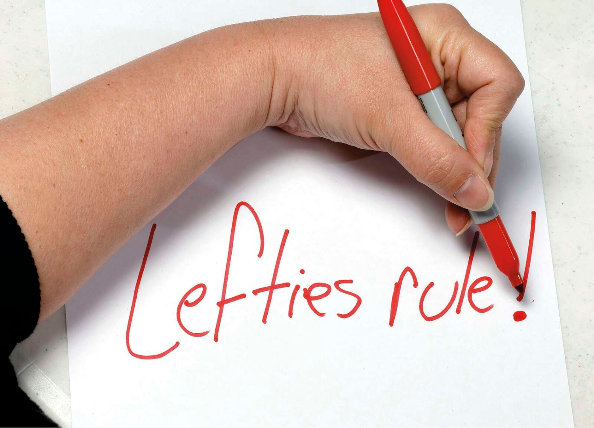
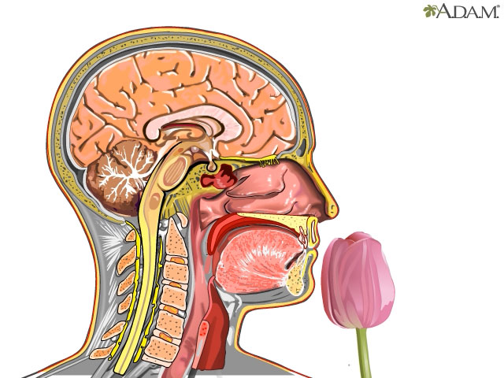

Promotes relaxation and tranquility.
Boosts energy and enhances focus.
Evokes feelings of reward and indulgence.
Awakens sensuality and warmth.
In the 1980s, It was found, that right-handers have a higher sensitivity to olfactory stimuli presented on the right side of the nose. Left-handers, on the other hand, are more receptive to stimuli on the left side of the nose
This can control whether a fragrance works or does not work in certain brain regions and leaves no traces. This could give an indication of how far, for example, Parkinson’s, Alzheimer’s, or other diseases may have progressed in a person.
Pleasantly smelling odors have a corresponding effect on the evaluation of faces. They can gain attractiveness through scent—and vice versa.